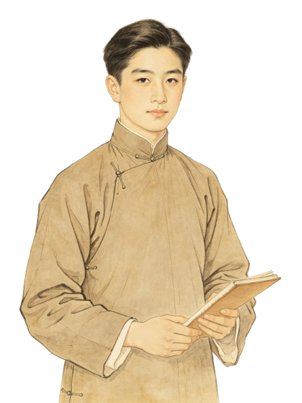

✨ 文脉旅人

班主
班主·老赵
三天内要是拿不出新戏，戏班就解散！你也别想回去了！

📌 新剧本
1946年，袁雪芬将鲁迅《祝福》改编为越剧《祥林嫂》，引发巨大轰动，开创越剧改编文学名著的先河。
🎭 新舞美
新越剧引入话剧写实布景和灯光，打破传统“一桌二椅”，舞台更贴近真实情境，吸引知识阶层观众。
🤝 联合力量
1947年，袁雪芬、尹桂芳等十位越剧演员联合义演《山河恋》，为筹建越剧剧场筹款，展现了团结变革的力量。